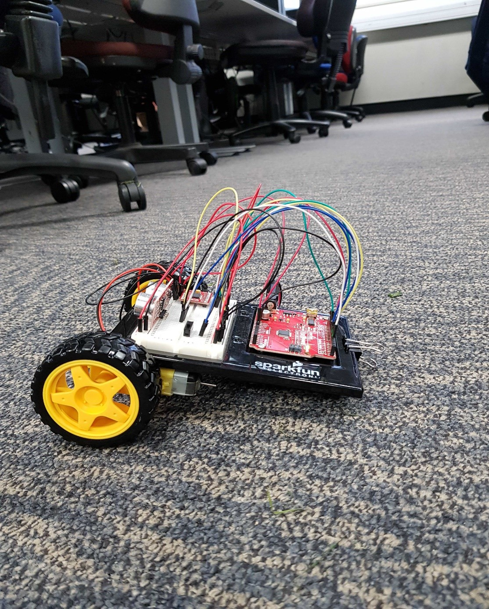
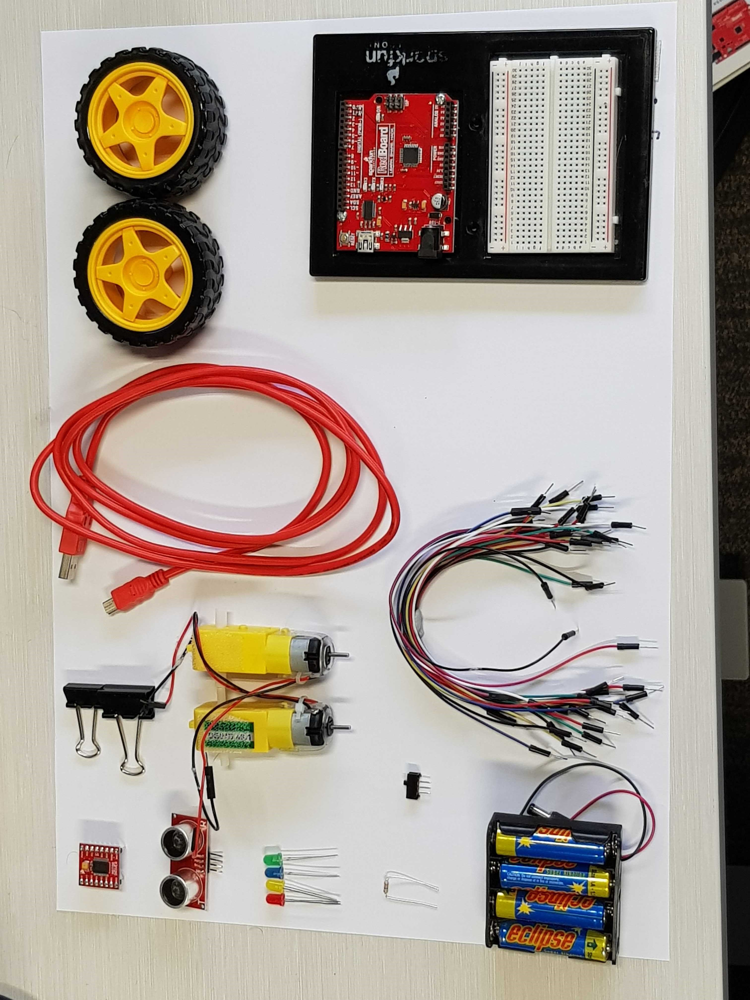
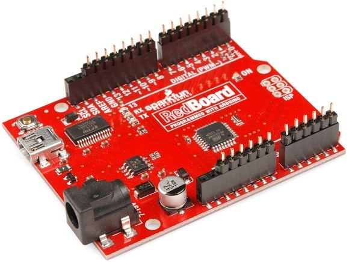
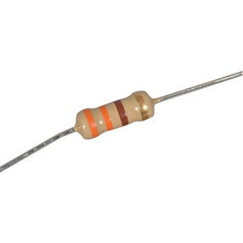
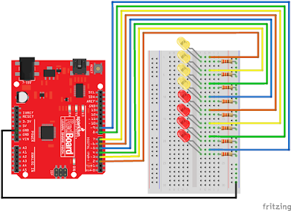
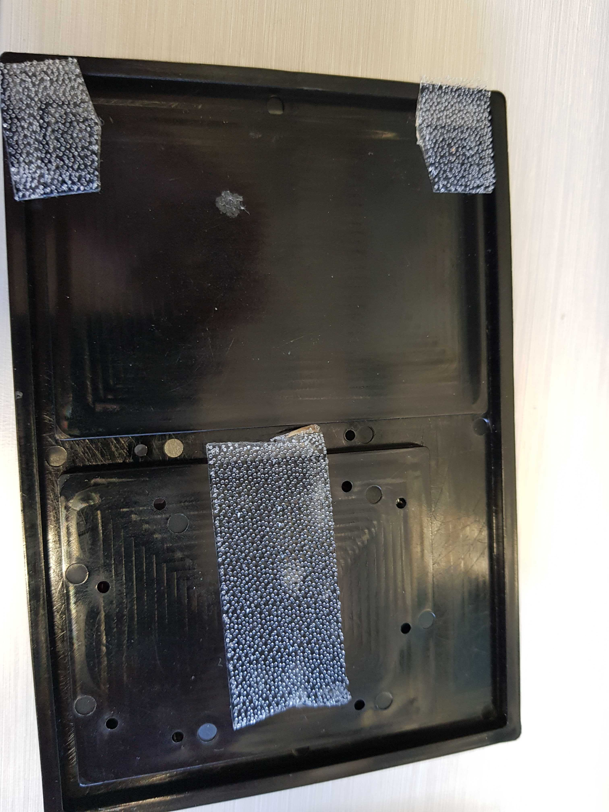

Working With Arduino
Welcome to this neat short tutorial on building a robot. Arduino is a flexable and versatile DIY programable hardware, allowing users to create a vast array of projects.
Overall Goals
Our main objective for this tutorial is to use Arduino hardware to create a basic distance sensing robot, as shown below:

By the end of this short course, you will be able to achieve the following objectives:
- Connect appropriate wires to the designated ports on the board
- Switch LEDS in a specific pattern
- Turn DC motors on/off
- Use switches to regulate power
- Convert a sketch or diagram into a physical product
- Use a Library in Code
Getting All Set Up
To get started, we will need to arrange which hardware parts we will be using. In the figure below, you will see the minimum items needed to complete the overall course:
From left to right:
- Motor Driver
- Distance Sensor
- 1-4 LEDs
- 1-3 330Ohm Resistors
- 1 Switch
- 1 4 Slot Battery Pack + 4 AA Batteries
- 20-25 Jumper Wires
- 1 Micro USB Cable
- 2 Wheels
- 1 Base Board with Breadboard and Spark Fun Red Board
- 2 Binder Clips
The above items are typically available at local hardware stores, such as Jay Car or Mitre 10. However, it is easier to purchase a kit that includes all the parts needed. They are needed for the final product, not all items are needed for the exercises.
Setting Up The Sketches
Before we continue on to the next set up stage, we should get to know a couple of key terms and phrases for using the Arduino GUI software.
What Is A Library?
A library is a simple file coded in either C or C++ programming language, of which contains some extra functionality needed to run certain strings of code. They typically signal the Arduino environment to link and compile that library’s code with your sketch.
What Is A Shield?
The shield is a piece of hardware that you can mount on the Arduino to give it a specific purpose (i.e. such as the motor driver we will be using later on). Think of it as the physical version of the library.
What Are Sketches?
They are the name specifically used to name the program the Arduino uses. It is the base code that is uploaded to an Arduino board.
What Is A "330 ohms" Resistor?
The 330ohms resistor is basically used as a “get you going” value that works on an average enough rate to power LEDS or other device tools. The purpose of this is to drop any voltage that is not required to power the LED when it is working at a satisfactory current.
What Is An Ohm?
This is the unit of electrical resistance, of which transmits a current of one ampere when subjected to a potential difference of one volt. This measurement is typically used for calculating which devices require a certain amount of power to operate. For more information, see Ohms Law and Power.
For the next stage of the set up requirements, follow along with the steps in order to install the required software:
Step 1: Download The Installer
Navigate to the download page and download the latest version of Arduino IDE.
Step 2: Running The Installation
Once that has downloaded, run the installer and you will come across a warning. This simply means that you need to confirm that this program is allowed to be on your device, and is allowed to install the necessary drivers.
After the warning, the installation process will take you here:

Select all components that you wish to have installed (for the task we will be doing, you'll need all of them).
Step 3: Directory
Next select where you would like to store the Arduino program files:

Step 4: Library Download
Now that we have installed the Arduino IDE program, we now need to download the library we will be using. Navigate to the following link and select SIK V4.1 CODE.
Once downloaded, extract the folder to your Arduino folder location that you've chosen (for example, I used my Documents folder). Once done, you should be able to see SIK-Guide-Code-Master under File->Sketchbook in the IDE navigation bar.
Exercises
Now that you are all set up with the Arduino software, let’s move on with doing some basic hardware tasks. All tasks will require the use of the Arduino GUI and the spark fun board.
Let's start off with a basic LED exercise.
Step 1: Tools
We will need the following to do this task:
Step 2: Circuit Placement
Follow along with the fritzing diagram below to set up the board. It doesn’t matter where on the board the wiring is
placed as long as they can complete a functioning circuit based on the diagram.
Step 3: GUI Code Setup
For this next step, open up your Arduino GUI that you installed previously. Start a new empty code file and name it as “Blink”.
Ensure that you take note of where all your code files end up, you may use them later on.
Step 4: Creating The Program
After we've made the file, tyoe in pinMode(yourPinHere, OUTPUT); into your void setup section. The pin number will be which ever one you have used.
Then within the void loop section, type up the following:
Take note of the delays. After every digital/analog write statement, there needs to be some level of delay to allow the hardware time to process in-between commands. This will stop it from short circuiting. Now save your file changes.
Step 5: Running The Program
Now that you have your program ready, navigate to Tools->Board and select the Arduino/Genuino Uno board, then check to ensure you have the correct port number. Once done, select the
Verify button located below the navigation bar to ensure there are no errors.
If you have no errors, select the upload button to send the commands to your Arduino device.
Final Step: Watch It Go!
Now that the commands have been sent, click on the serial monitor button on the top right hand corner and watch the LED do its work.
Optional Challenge: Using the above task, try to make more than one LED blink through a cycle. Use the diagram below as a hint
For our next exercise, we'll work with using a switch to power cyclke certain devices. In this case, we will use it to switch between two different LEDs.
Step 1: Tools
We will need the following to do this task:
Step 2: Circuit Placement
View the fritzing diagram below as a guide. In this guide, a Spark fun 101 board has been used.
Step 3: GUI Code Setup
For the file, save it as “switch LEDS” within the same folder that you placed the Blink task. After that, declare your variables as follows:
Step 4: Programming The Arduino
Now that we have the general setup, follow along with the code snippet below and carry out the general upload process used in Task One. Once done you should have a good response time between the on LED and the off LED.
Optional Challenge: Play around with the delays between both LEDs to see if you can get different responses between the two.
Now that you are familiar with uploading code as well as checking for errors by using the verify button, we can now move on to more complex scenarios. For the next task, we will focus on using the Distance Sensor. Note thate from this point, we'll rely on the library sketchbook we downloaded for the code as things get more complex from here.
Step 1: Tools
We will need the following to do this task:
Step 2: Circuit Layout
Using the fritzing diagram below, set up the circuit board:
Step 3: Coding The Program
In order to properly code this part, we will need to use the library that we imported from the beginning. From the navigation bar, select File->Sketchbook->SIK-Code-Master-Guide and then select the DistanceSensor example sketch.
This way, we won't need 15+ steps just for the code!
Step 4: Upload Code
Now we simply verify and upload the code.
This task will require quite a bit of detail to both the code and the wire placement.
Step 1: Tools
We will need the following to do this task:
Step 2: Circuit Placement
Use the fritzing diagram below as a guide for the circuit placement:
Step 3: Coding The Program
For the next step, navigate to File->Sketchbook->SIK-Code-Master-Guide and select Motor Basics. Take note of the code below:
This is known as a Function that will do extra mechanics that we can't place in the void setup or void loop snippets. This is so the coee is set up in a readable mannor and does not run the risk of overloading a section of the program, or worse, short-circuit the Arduino.
Step 4: Run The Program
Once you have established the code via verifying it and uploading it to the Arduino, try altering the speed variables and directions to see how the motor responds to what you have entered.
Quiz
Below is a small quiz to test yourself on the knowledge and skills you've gathered from this tutorial:
Final Product
Now that you have a grasp on the general basics around the Arduino and its tools, we can apply that knowledge to building the robot buddy. Warning: Do not place batteries in the holder until you are all setup! If so, you will shortcircuit the redboard
Step 1: Tools
We will need the following:
Step 2: Circuit Placement
Use the diagram below as a guide for the placement. Hint: Refer to the previous tasks as a guide as well.
Step 3: Dual Lock Tape Placement
Next for the set up, cut the dual lock tape so it fits precisely under each motor:
Then repeat this for the board and the battery holder.
Be sure to place them so that the battery holder and the two motors will lock into place underneath the board:
Step 4: Coding The Program
Now that we have the robot wired, we can now program it. Be sure to have the switch off before you code, as once the upload is done the robot will start going.
Navigate to the SIK sketchbook library and select "AutonomousRobot". As you can see throughout the library code, the calculations for the distance and movement have been done for you.
However, it may pay to make some small adjustments under void loop and Leftmotor and Rightmotor functions. This is due to the fact that the default values may not suit every environment,
so a bit of trial and error is required here.
Final Step: Power The Robot
Now that we have the code and circuitry all set up, place the batteries within the battery holder and switch on the robot.
If each step has been followed carefully, you should end up with the final result: